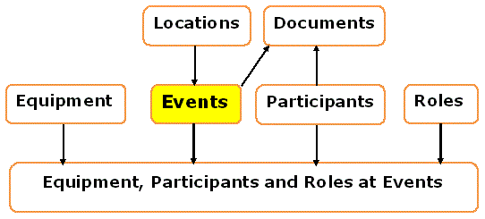

Chapter 2 - Anthropology - Conceptual Model

|
in the Forensics book, Anthropology is called "The Science of
Bones"
In other words, the Evidence is predominantly Bones, the
Analysis involves tests and techniques that are appropriate
to Bones and the Analysis is the identification of an individual
human being from the evidence of Bones.
A number of Participants play different Roles including
anthropologists, X-ray technicians and photographers.
Work took place at a number of Locations, including murder
sites, laboratories and courts.
A variety of Documents is involved, such as Reports of
Findings, Court Proceedings and Publications.
A wide range of activities is involved, which we can classify as
Events.
|